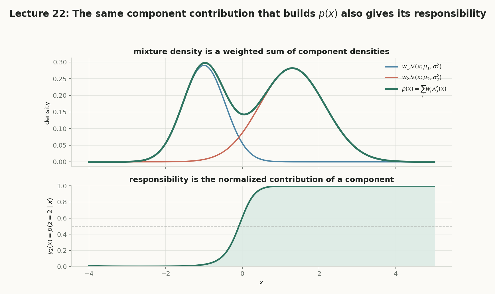
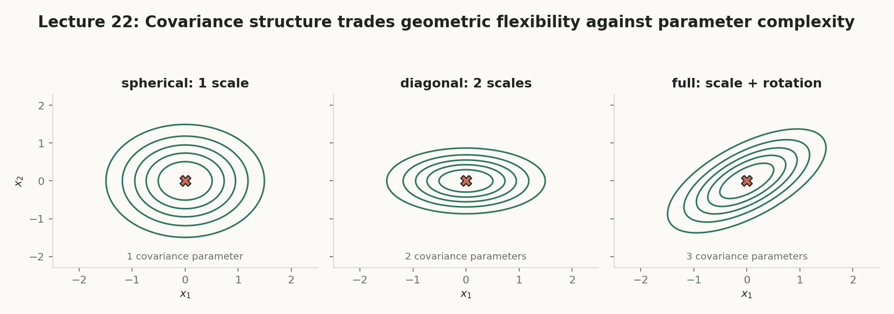
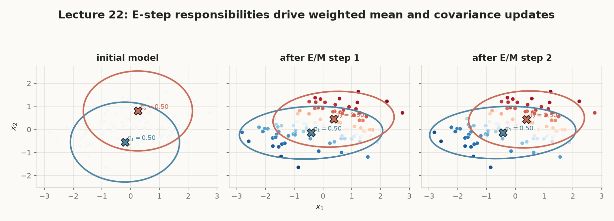

第 22 讲 · 互动附属页
Gaussian Mixture Models
把一个“没有标签”的数据集看成多个生成机制的叠加：先用当前参数计算每个点对每个组件的责任度，再把责任度当作软计数更新参数。这条链把第 21 讲的 Bayes 后验和 MLE/MAP，接成第 23 讲的模型选择与病态性判断。
隐藏组件如何变成可计算的后验？
从生成故事、混合密度，走到责任度、软计数与一轮完整 EM。
无标签不等于不能做 MLE
标签未知使直接优化出现 log ∑；E/M 把难题拆成“先猜后算”。
后验 → 加权 MLE → 重新后验
每个点可以分给多个组件；不把模糊证据过早切成 0/1。
概念地图：点击节点跳到对应小节
实线是核心路径；紫色节点属于拓展。箭头从方块边界出发，在另一方块边界结束，避免穿过节点。
核心1. 从一个没有标签的样本开始
第 21 讲中，类别标签 $Y$ 可以进入 Bayes 后验；本讲把“类别”换成不可见的组件编号。先固定记号：大写是随机变量，小写是观测；$i$ 是样本索引，$j$ 是组件索引，二者不是同一个下标。
是什么
潜变量 $Z_i\in\{1,\ldots,K\}$ 是看不见的组件标签；$X_i\in\mathbb R^d$ 是第 $i$ 个观测。
白话理解
每个点像是由某个“工厂”生成的，但数据表只给了成品，没有告诉我们工厂编号。
干嘛用
把复杂数据分解成若干局部生成机制；组件是建模工具，不自动等于语义类别。
怎么用
假设 $Z_i$ 先被抽出，再按组件的高斯分布生成 $X_i$；训练时反过来估计 $Z_i$ 的后验。
为什么重要
标签未知正是难点；责任度会把“未知”保留成概率，连接下一节的混合密度。
记号总表（本页始终沿用这一套）：
$$X_i\in\mathbb R^d,\quad Z_i\in\{1,\ldots,K\},\quad w_j\ge0,\quad \sum_{j=1}^K w_j=1,$$
$$\mu_j\in\mathbb R^d,\quad \Sigma_j\in\mathbb R^{d\times d},\quad \theta=\{w_j,\mu_j,\Sigma_j\}_{j=1}^K.$$
$d$ 是特征维度；$K$ 是组件数；$w_j$ 是第 $j$ 个组件被抽到的概率；$\mu_j$ 与 $\Sigma_j$ 分别控制中心和形状。注意大写 $\Sigma$ 是协方差矩阵，而求和符号写作 $\sum$；$\ell_{\mathrm{obs}}$ 中的希腊字母 $\ell$ 是 log-likelihood，不是层号 $l$。
核心2. GMM 的生成故事与混合密度
先写生成过程，再推观测密度。这里的“混合”不是挑一个最像的高斯，而是按 $w_j$ 把所有可能组件的密度相加。
是什么
GMM 假设 $Z\sim\operatorname{Categorical}(w_1,\ldots,w_K)$，且 $X\mid Z=j\sim\mathcal N(\mu_j,\Sigma_j)$。
白话理解
先转动一个有 $K$ 个结果的转盘，再从对应的高斯云里抽点；我们只看到点，没看到转盘结果。
干嘛用
用多个简单高斯拼出多峰、椭圆或倾斜的密度；比 k-means 多了密度与不确定性。
怎么算
固定一个 $x$，分别算 $w_j\mathcal N(x;\mu_j,\Sigma_j)$，然后相加。求和在取对数之前。
为什么重要
$\log\sum_j$ 不能拆成各项的和，导致观测 likelihood 没有直接闭式解，引出 E/M。
把隐藏标签边缘化：
$$p(x\mid\theta)=\sum_{j=1}^K p(z=j\mid\theta)p(x\mid z=j,\theta)=\sum_{j=1}^K w_j\,\mathcal N(x;\mu_j,\Sigma_j).$$
$p(x)$ 是密度，不是“第几个簇”的概率；若要问组件归属，必须再用 Bayes 得到责任度。这个区分正是第 23 讲讨论异常检测和分类时的入口。
拖动参数：蓝线与橙线是各组件密度，绿色线是按权重相加后的 $p(x)$。曲线由高斯公式逐点计算，不手画形状。
读图：同一个查询点可以同时得到两个组件的贡献；当峰重叠时，不能只看最近均值就宣布归属。
核心3. 两个 likelihood：为什么需要拆步
不要把带隐藏标签的 complete likelihood 和只看见 $x_i$ 的 observed likelihood 混为一谈。前者便于计算，后者才是我们真正想最大化的观测数据目标。
是什么
observed likelihood 是 $\prod_i p(x_i\mid\theta)$；complete likelihood 是 $\prod_i p(x_i,z_i\mid\theta)$。
白话理解
一个只看成品，一个还拿到了每件成品的生产线标签；后者信息更多，所以更容易算。
干嘛用
用 complete 目标组织 M-step，同时用 observed likelihood 检查真实训练目标是否没有下降。
怎么算
先用 $\gamma$ 估计标签的软证据，再固定这张软表做加权 MLE；重复 E 与 M。
为什么重要
若把两个目标当成一层，就会误以为每一步都在直接最大化同一个简单公式；第 24 讲才会证明单调性。
只观测 $x$ 时：
$$\ell_{\mathrm{obs}}(\theta)=\sum_{i=1}^n\log\left[\sum_{j=1}^K w_j\mathcal N(x_i;\mu_j,\Sigma_j)\right].$$
若 $z_i$ 已知，则：
$$\ell_{\mathrm{complete}}(\theta)=\sum_{i=1}^n\left[\log w_{z_i}+\log\mathcal N(x_i;\mu_{z_i},\Sigma_{z_i})\right].$$
难点集中在 observed 目标的 $\log\sum$；不是“高斯不会算”，而是未知标签把求和放进了对数。
核心4. E-step：责任度是后验概率
责任度不是另一个神秘分数，而是第 21 讲 Bayes 后验在隐藏组件上的直接复用：观察到 $x_i$ 后，第 $j$ 个组件应承担多少概率质量？
是什么
责任度 $\gamma_{ij}=P(Z_i=j\mid X_i=x_i,\theta)$，组成 $\Gamma\in\mathbb R^{n\times K}$。
白话理解
一个点可以同时“像”两个组件；$0.8/0.2$ 比突然切成 $1/0$ 更诚实。
干嘛用
把未知标签转换为可加权的证据；下一步用它当软计数更新均值、方差和权重。
怎么算
算每个组件的加权密度 $s_{ij}=w_j\mathcal N(x_i;\mu_j,\Sigma_j)$，再除以所有 $s_{ik}$ 的总和。
为什么重要
每行和为 1 是合法性的核对；它把 posterior 与 weighted MLE 连接起来，是整讲的铰链。
先算未归一化贡献，再归一化：
$$s_{ij}=w_j\mathcal N(x_i;\mu_j,\Sigma_j),\qquad \gamma_{ij}=\frac{s_{ij}}{\sum_{k=1}^K s_{ik}}.$$
因此 $\sum_j\gamma_{ij}=1$。注意这里的 $\gamma$ 是概率向量，不是硬标签；特殊的逐元素乘法 $\odot$ 本讲不需要，若在向量化代码中出现，它表示同形状逐元素相乘，不是矩阵乘法。
上图的两条贡献曲线来自同一套参数；下方条形把未归一化贡献除以总和，显示责任度而不是只显示最大组件。
核心5. M-step：把责任度当作软计数
E-step 固定参数、估计归属；M-step 固定归属、重新估计参数。关键转换是：有标签 MLE 里的 $\mathbf1\{z_i=j\}$，被 $\gamma_{ij}$ 替代。
是什么
M-step 在固定 $\Gamma$ 后最大化加权 complete likelihood；$N_j=\sum_i\gamma_{ij}$ 是有效样本量。
白话理解
组件 1 收到 $0.8$ 个样本、组件 2 收到 $0.2$ 个样本；允许“半个样本”参与平均。
干嘛用
把每个组件的责任证据集中起来，得到新的比例、中心与椭圆形状。
怎么算
先列 $N_j$，再算加权均值，最后算围绕新均值的加权协方差；分母是 $N_j$，因为这里是 MLE。
为什么重要
它把“后验”落地为参数更新；更新后的参数再回到 E-step，形成闭环。
三条更新式（$n$ 是样本总数）：
$$N_j=\sum_{i=1}^n\gamma_{ij},\qquad w_j^{\mathrm{new}}=\frac{N_j}{n},$$
$$\mu_j^{\mathrm{new}}=\frac{\sum_{i=1}^n\gamma_{ij}x_i}{N_j},\qquad \Sigma_j^{\mathrm{new}}=\frac{\sum_{i=1}^n\gamma_{ij}(x_i-\mu_j^{\mathrm{new}})(x_i-\mu_j^{\mathrm{new}})^\top}{N_j}.$$
协方差中的 $\top$ 把列向量转成行向量，形成 $d\times d$ 矩阵；标量例子里它退化成平方。不要把 $N_j-1$ 的无偏估计修正混进这里：GMM 的 Gaussian MLE 分母是 $N_j$。
温度越低，软分配越接近 0/1；温度越高，两个组件共同分担更多责任。图中所有数字与下方步骤由同一个 draw() 计算。
核心6. Worked example：完整的一次标量 EM
用讲义中的一维数据 $x=(-1,0,1,5,6,7)$、$K=2$ 展开一轮；默认初始化与原讲义 worked example 3 对齐。示例把“公式链”变成可检查的数值流程：责任度 → 有效样本量 → 新均值/方差 → 新 likelihood。
是什么
EM 是在隐藏变量存在时交替进行 E-step 与 M-step 的算法。
白话理解
先按当前模型给每个点分“概率票”，再按这些票重画两个高斯；反复修正。
干嘛用
求 GMM 参数的局部最优解；它不是自动找到真实语义，也不保证不同初始化得到同一解。
怎么算
每一轮保存 $\ell_{\mathrm{obs}}$；若新值没有明显下降，才继续迭代。实际代码还要防止协方差退化。
为什么重要
这是本讲从后验到参数的完整闭环；第 23 讲会问如何选 $K$、如何防塌缩与评估。
“随机初始化”真的调用 Math.random()，每次会改变初始均值与记录的 seed；它不是伪装成随机的固定按钮。
比较相邻两轮的 $\ell_{\mathrm{obs}}$，而不是只看均值是否移动。$\ell$ 是希腊字母 ell；它在这里表示 log-likelihood。
上半部是当前分配与中心；下半部是已记录的 observed log-likelihood。每次 E/M 更新都重新计算，而不是把讲义里的某个小数写死。
核心7. Hard-EM 与 Soft-EM
Hard-EM 把后验向量压成一个 0/1 标签：$z_i^{\mathrm{new}}=\arg\max_j\gamma_{ij}$；Soft-EM 保留完整的 $\gamma_{i1},\ldots,\gamma_{iK}$。下面改变查询点和方差，观察“软”在哪里。
是什么
Soft-EM 用连续责任度；Hard-EM 用最大后验的 0/1 分配。
白话理解
模糊点不是被迫站队：Soft-EM 说“主要像 1，也有一部分像 2”。
干嘛用
重叠组件或小样本时，保留不确定性通常比突然切换更平滑。
怎么算
先有 $\gamma$；Hard 取最大索引并把它写成指示函数，Soft 直接把整行带进 M-step。
为什么重要
下一节 k-means 正是 Hard-EM 在等权、共享球形协方差下的特殊极限，不是所有 GMM 都等于 k-means。
拓展8. k-means 是什么极限
这里要严格区分两句话：Hard-EM 与 Lloyd 更新相同，需要等权 $w_j=1/K$ 与共享球形协方差 $\Sigma_j=\sigma^2I$；Soft-EM 在 $\sigma^2\to0$ 时才趋近硬分配。
是什么
k-means 最小化到最近中心的平方距离和；在上述 GMM 限制下与 Hard-EM 对应。
白话理解
密度云变得极窄、每个组件一样重，谁的中心最近谁就负责。
干嘛用
解释 k-means 为何快、为何没有协方差与概率密度；也解释它为何表达能力更窄。
怎么算
比较 $\log w_j-\tfrac12\log|\Sigma_j|-\tfrac12\|x-\mu_j\|^2_{\Sigma_j^{-1}}$；约束后只剩距离项。
为什么重要
它是模型假设的结论，不是算法名称的同义词；第 23 讲会回到更一般的协方差结构。
限制条件：
$$w_j=\frac1K,\qquad\Sigma_j=\sigma^2I.$$
此时最大责任度等价于最小 $\|x-\mu_j\|^2$；但若权重不等、方差不同或协方差非球形，就不能直接叫 k-means。
拓展9. 协方差结构与参数复杂度
GMM 的每个组件至少有权重、均值和协方差。full 协方差能表达旋转椭圆，但参数最多；diagonal 忽略维度间相关性，换取稳定性；spherical 更省参数。
是什么
协方差矩阵 $\Sigma_j$ 描述各维波动与相关方向，必须对称半正定。
白话理解
它决定高斯云是圆、轴对齐椭圆，还是可以旋转的椭圆。
干嘛用
在表达能力、样本量与数值稳定性之间做选择；不是越复杂越好。
怎么算
$d$ 维时，spherical 每组件 1 个方差，diagonal 有 $d$ 个，full 有 $d(d+1)/2$ 个自由参数。
为什么重要
参数太多会估计噪声，太小会错过相关结构；第 23 讲会加入正则化与验证集判断。
拓展10. 初始化：同一目标可能有不同解
EM 通常只保证在当前局部路径上不降低目标，不保证找到全局最优。组件标签还存在 permutation symmetry：交换组件编号，密度不变，名字却会交换。
多次 restart 看什么
固定停止规则，比较最终 $\ell_{\mathrm{obs}}$、协方差是否正定、有效样本量是否塌到接近零；不要只比较“第几次运行”。
标签交换不是新模型
若把组件 1 与 2 同时交换 $w,\mu,\Sigma$，混合密度和 likelihood 不变。语义解释要结合稳定性、标签锚点或下游任务。
拓展11. 应用与限制：密度不是语义
是什么
GMM 直接给出 $p(x)$ 与责任度 $\gamma$，可用于聚类、密度估计、异常检测、缺失值处理、生成式分类与半监督学习。
白话理解
它不仅回答“离哪个中心近”，还回答“这个点在整体分布中有多常见”。
干嘛用
低密度点可作为异常候选；带标签时可按类别分别拟合 GMM 做 Bayes classifier。
怎么算
用混合密度评估常见性，用责任度解释组件归属；模型选择、正则化和验证集不能省略。
为什么重要
一个语义类别可能需要多个组件，一个组件也可能跨语义类别；第 23 讲会把这个限制变成实践判断。



核心收束：把一个隐藏标签问题变成 E/M 闭环
混合密度
$$p(x)=\sum_jw_j\mathcal N(x;\mu_j,\Sigma_j)$$
责任度
$$\gamma_{ij}=\frac{w_j\mathcal N(x_i;\mu_j,\Sigma_j)}{\sum_k w_k\mathcal N(x_i;\mu_k,\Sigma_k)}$$
有效样本量
$$N_j=\sum_i\gamma_{ij},\qquad w_j^{new}=N_j/n$$
加权均值
$$\mu_j^{new}=\frac{\sum_i\gamma_{ij}x_i}{N_j}$$
加权协方差
$$\Sigma_j^{new}=\frac{\sum_i\gamma_{ij}(x_i-\mu_j^{new})(x_i-\mu_j^{new})^\top}{N_j}$$
Hard-EM 特例
$$z_i^{new}=\arg\max_j\gamma_{ij}$$